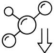
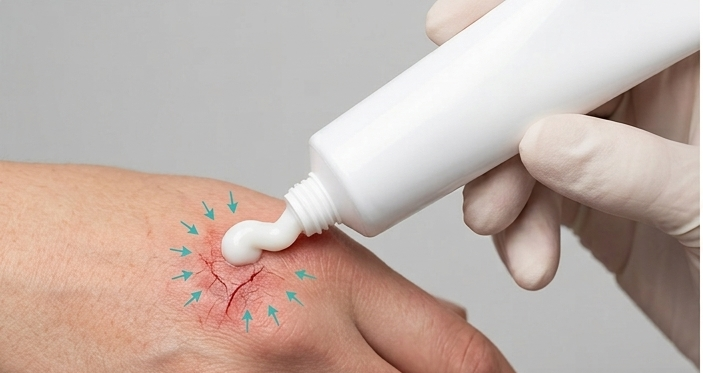
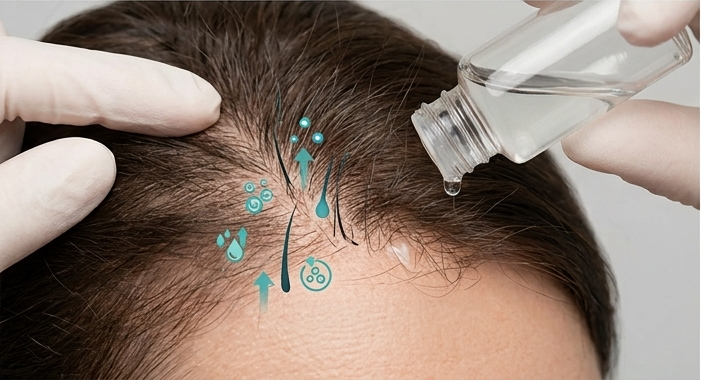
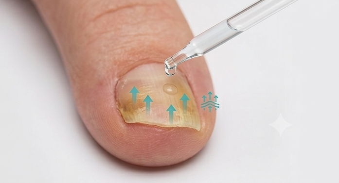
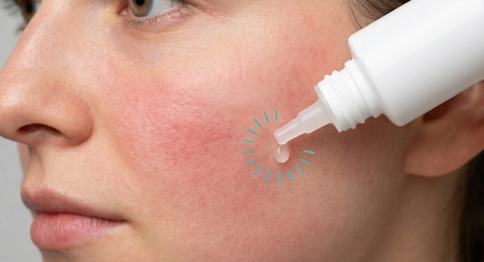

MicBioKeratinMED
FOR MEDICAL DEVICES
Highly purified keratin for wound dressings, medical materials, and other biomedical applications.

KEY ADVANTAGES
Pharmaceutical purity
High purity, allergen-free.
Tissue regeneration
Accelerates healing and regeneration.

High bioavailability
Deep penetration into the dermis.
Formula stability
Stable under any conditions.
FIELDS AND APPLICATIONS

ACTIVE INGREDIENT FOR THERAPEUTIC OINTMENTS AND CREAMS
Raw material for products that accelerate the healing of skin micro-injuries and cracks.

ACTIVE INGREDIENT FOR SOS PRODUCTS USED AFTER PEELS AND INJECTIONS
Stimulates follicle nourishment and scalp recovery in cases of alopecia.

RAW MATERIALS FOR HAIR LOSS REMEDIES
A hypoallergenic ingredient for lifting and strengthening the skin's protective barrier.

BASE FOR SERUMS FOR NAIL DYSTROPHY
Bioavailable keratin for restoring the nail plate after fungal infections.
Why MicBioKeratinMED
The answer lies in our medical-grade purification and precise molecular weight control. We obtain hydrolyzed keratin specifically tailored for maximum tissue bioavailability. It is a bio-compatible protein framework that targetedly integrates into damaged areas of the epidermis and dermis, accelerating cellular recovery. By choosing MediBioKeratin Med, you give your products a proven ability to repair and protect skin at the molecular level.
KEY CHARACTERISTICS
Interested in MicBioKeratinMED?
Contact our team to discuss your project or request a product sample.